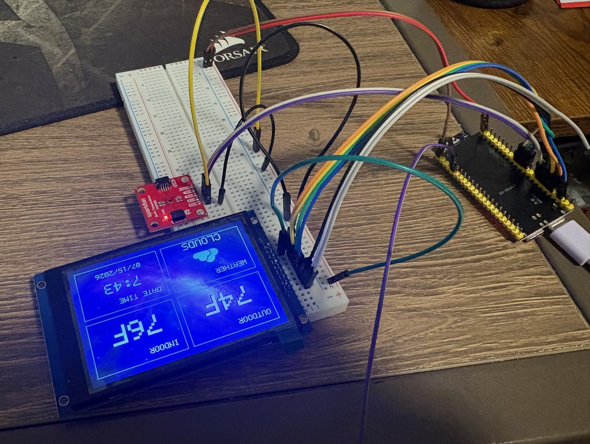
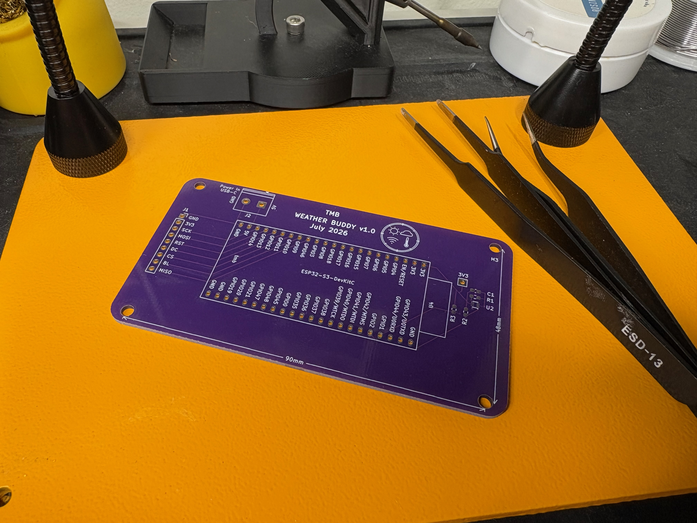
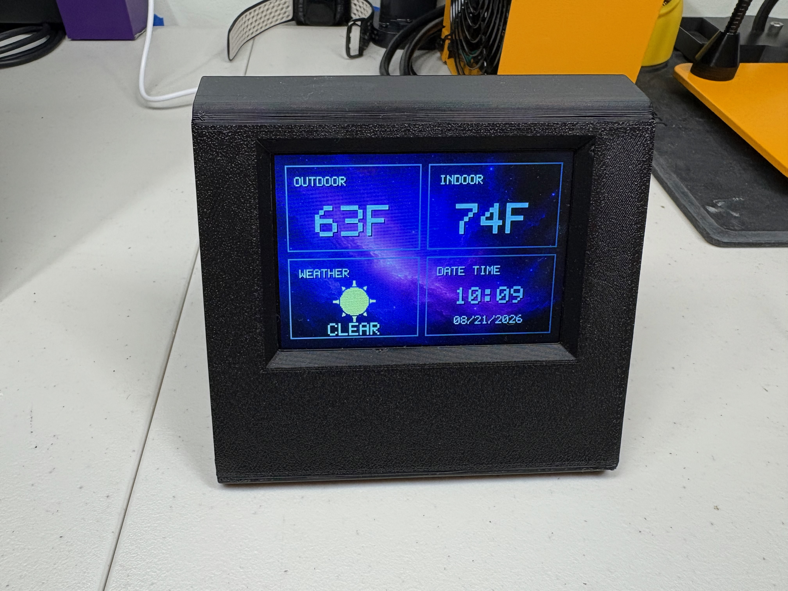
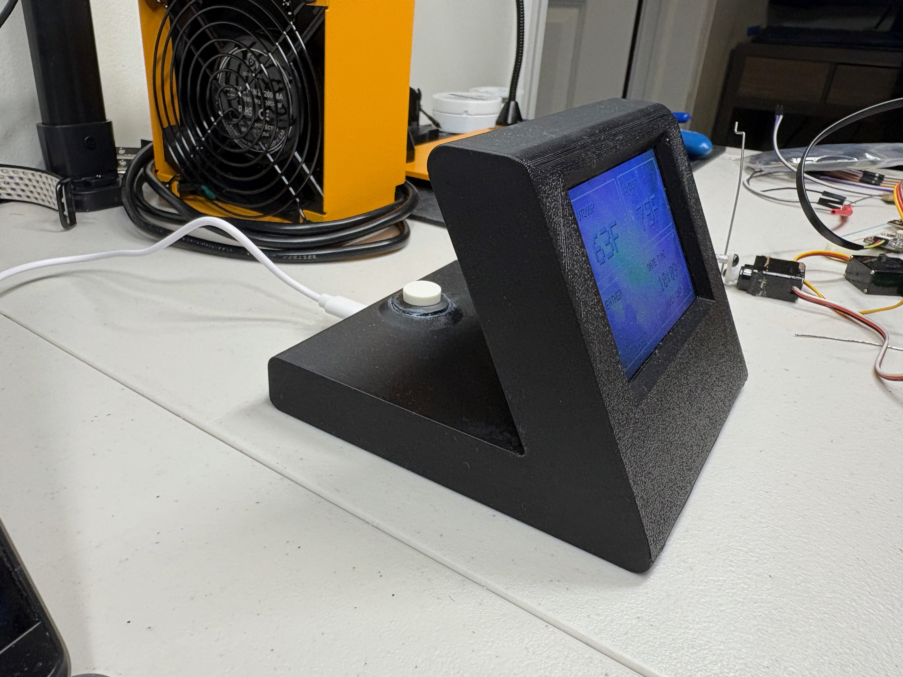

Weather Buddy is a small desktop display that makes checking the weather as easy as glancing
across the room. It connects to WiFi and pulls current outdoor conditions from a weather API,
while an onboard sensor measures the indoor temperature.
An ESP32 brings everything together and displays both readings on a small TFT screen. The
software is written in ESP-IDF, with the electronics built on a custom PCB and held in a custom 3D-printed case.
The photos below document the build from the first breadboard test to the finished device sitting on my desk.

The first breadboard test, with every component connected and working together. This setup let me test the display, indoor temperature sensor, WiFi connection, and weather API before moving the project onto a permanent PCB.

Weather Buddy designed and printed PCB, forgot to take a photo of the assembled board before putting it in the case, so here is the unpopulated board. On the left is a 9-pin header for the TFT display, and on the right is the surface-mount spots for the indoor temperature sensor and its associated resistors and capacitor. The USB-C power input is in the top-left corner, and the ESP32-S3 dev-kit is in the center of the board. You may notice there is no place for the button on the back of the case, that is because I forgot to add it to the PCB design until after I got them printed, so I had to solder it directly to the ESP32 dev-kit...


The finished Weather Buddy working on my desk in its custom 3D-printed case, showing the current outdoor weather and temperature, the temperature inside the room, and the time. It has a USB-C power input and a small button on the back to enter setup mode and also toggle the display.